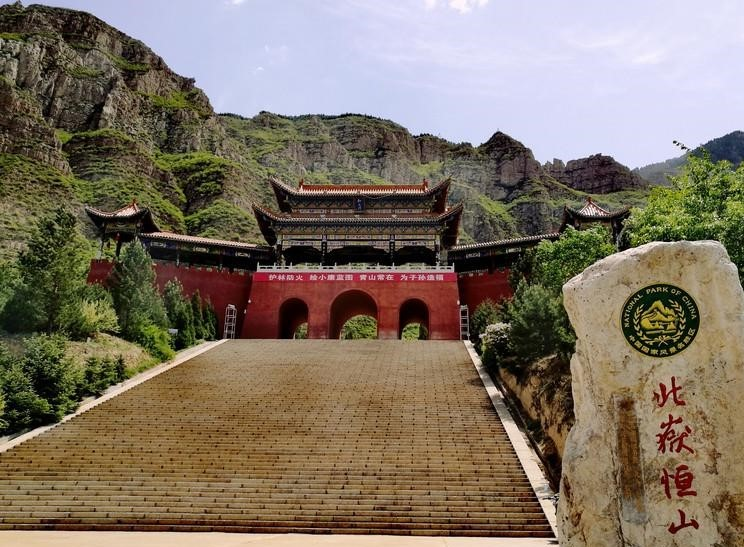
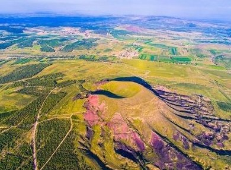
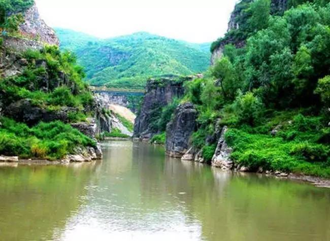
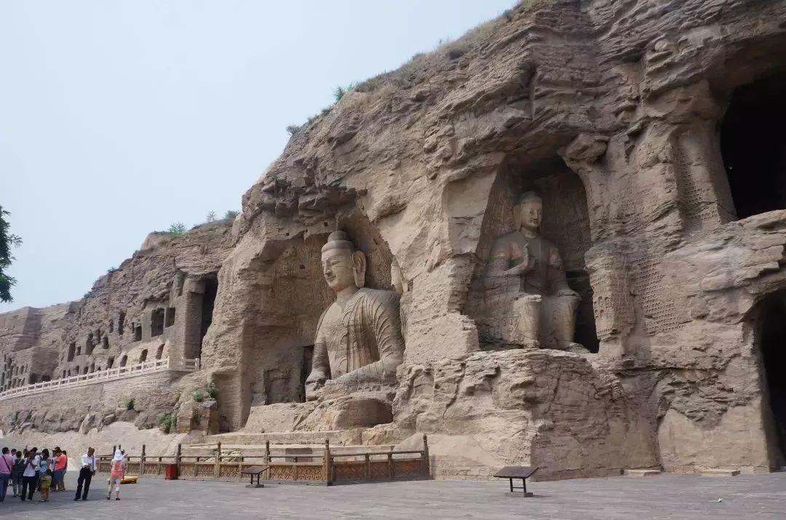
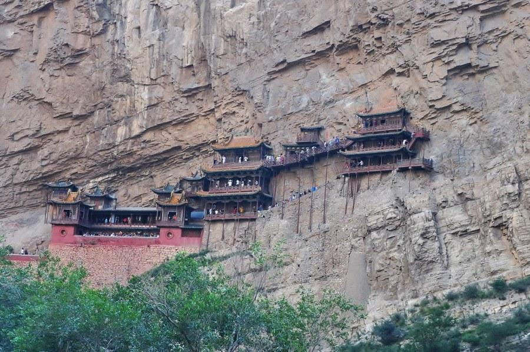
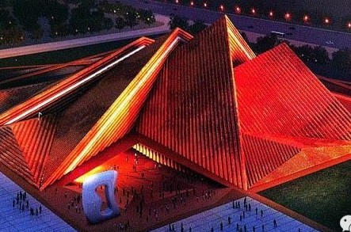
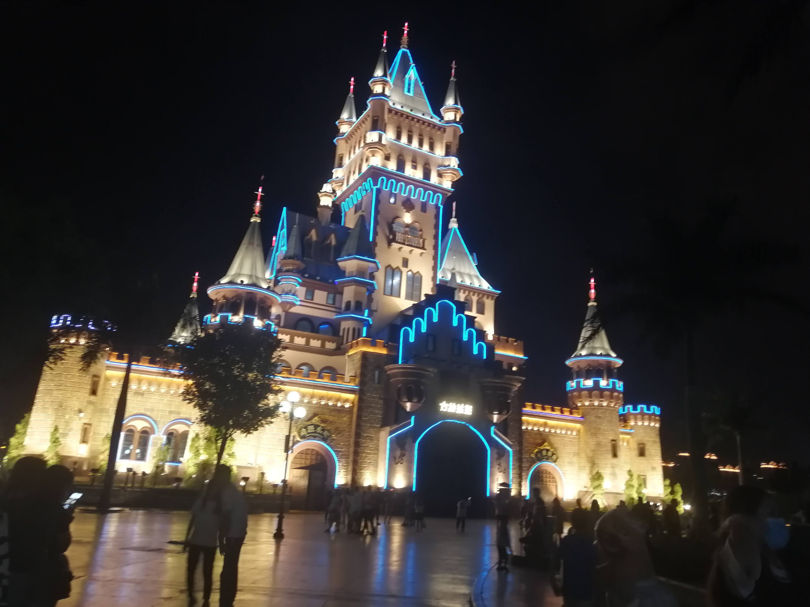
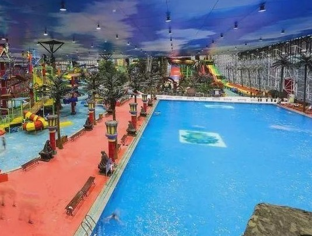
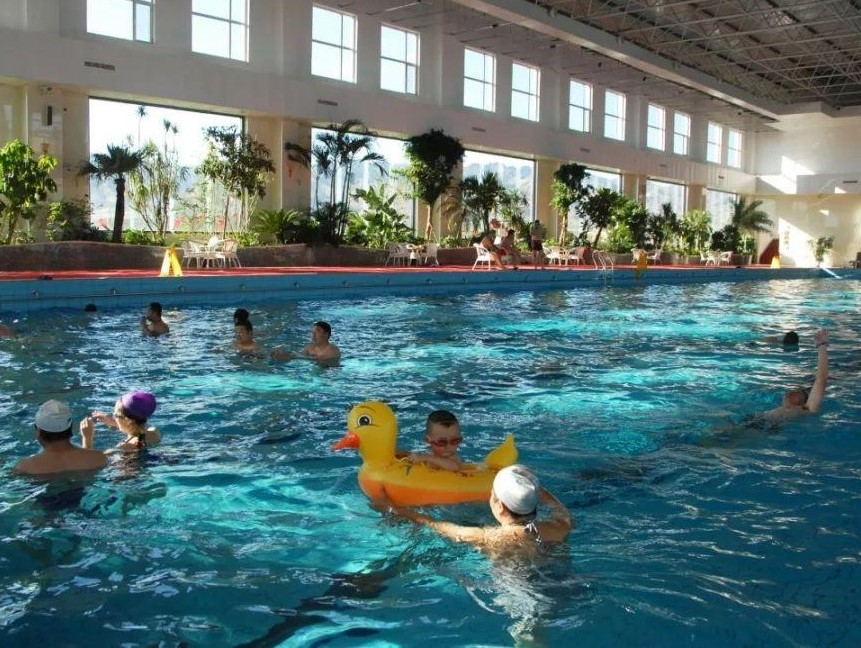

恒山
- 恒山位于山西省大同市浑源县城南10公里处，距大同市市区62公里。
- 五岳之一，为中国地理标志，是天下道教主流全真派圣地。
详情

火山群
- 大同火山群是中国著名第四纪火山群。已知有30余座，分布在山西省大同市云州区和阳高县境内。
- 大同火山群最高大也最有名的火山有阁老山、黑山、狼窝山、金山、牌楼山、昊天山、马蹄山等七处。
详情

乌龙峡
- 乌龙峡地处桑干古道，是由火山熔岩经河水亿年冲刷形成的一条长约10公里，宽约1公里的大峡谷。
- 乌龙峡地处大同火山群境内，峡两岸为火山熔岩，其怪石、飞泉、乌蝶被誉为“石峡三奇”。
详情

云冈石窟
- 大同市城西约16公里的武州山南麓、武州川的北岸，依山开凿东西绵延约1公里。主要洞窟45个，大小窟龛252个，石雕造像51000余躯，为中国规模最大的古代石窟群之一。
- 1961年公布为全国首批重点文物保护单位，2001年12月14日被联合国教科文组世界遗产名录，2007年5月8日被国家旅游局评为首批国家5A级旅游景区。
详情

悬空寺
- 悬空寺，位于大同市浑源县恒山金龙峡西侧翠屏峰峭壁间，原叫"玄空阁玄”取自于中国道教教理，后改名为“悬空寺”，
- 建成于公元491年，是佛、道、儒三教合一的独特寺庙。“悬空寺”建筑极具特色，以如临深渊的险峻而著称，素有“悬空寺，半天高，三根马尾空中吊”的俚语，以如临深渊的险峻而著称。
详情

美术馆
- 由世界著名的英国福斯特建筑事务所及中国建筑设计院设计。大同美术馆主体为全地下结构，上部采用钢结构空间桁架体系。建筑主体由四个从36米到24米高度不等的三角锥形相连而成，形成雄伟的金字塔建筑布局。
- 最独特的设计元素之一就是金字塔式几何外形。两对金字塔以富有动感、逐渐上升的方式排列起来，形成宽敞宏伟的巨大展厅，可以用于放置超大型艺术作品。
详情

方特欢乐世界
- 大同方特欢乐世界是位于大同市平城区，总占地面积约800亩，是晋北、 蒙地区第四代高科技主题公园，以科幻和互动体验为最大特色。
- 2018年12月，经山西省旅游资源规划开发质量评定委员会组织评定，大同方特欢乐世界景区为国家AAAA级旅游景区。
详情

魏都水世界
- 魏都水世界是一个由科技及生态采摘为中心的大型水上公园娱乐项目，集农业采摘、科技果蔬园、水上公园、滑雪、滑冰、骑射、垂钓、室内健身养生、会议及休闲度假为一体的农业科技旅游观光综合体。
- 目前已被列入大同市2017年重点工程，2019年正在成为AAAA级国家旅游景区
详情

玉安生态度假岛
- 依托环山映水、杏花烂漫的优美环境，以旅游度假为主题，东方文化与现代建筑元素相融合。在规划设计中，把绿色农业、农艺展示与旅游者的广泛参与融为一体。
- 可集休闲度假、旅游、温泉、滑雪、会议、餐饮美食、沙滩烧烤、自然观光体验、生态采摘、垂钓、水族观赏、游泳、桑拿、健身。
详情
回到顶部
返回首页